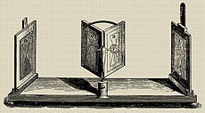
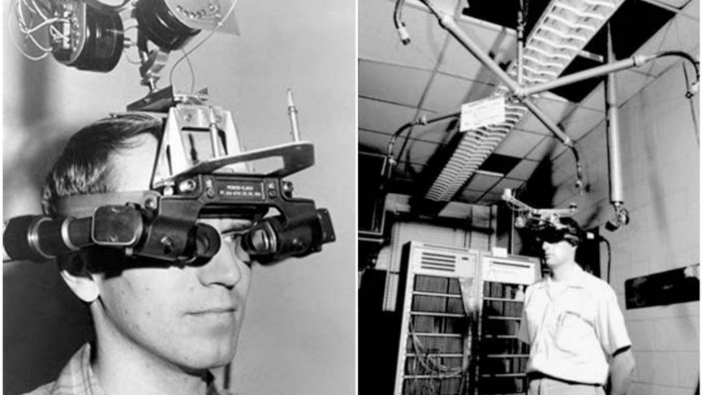
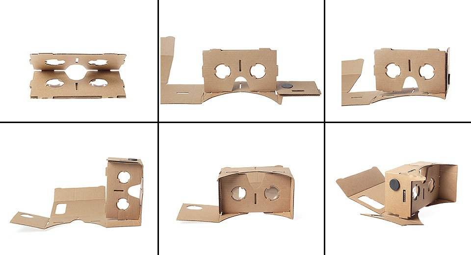
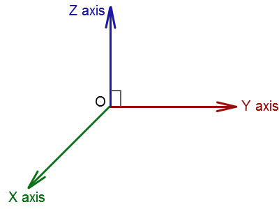
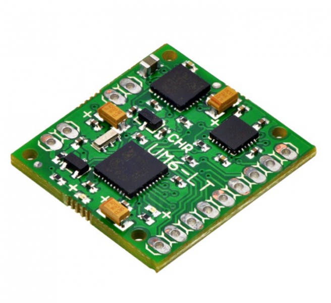
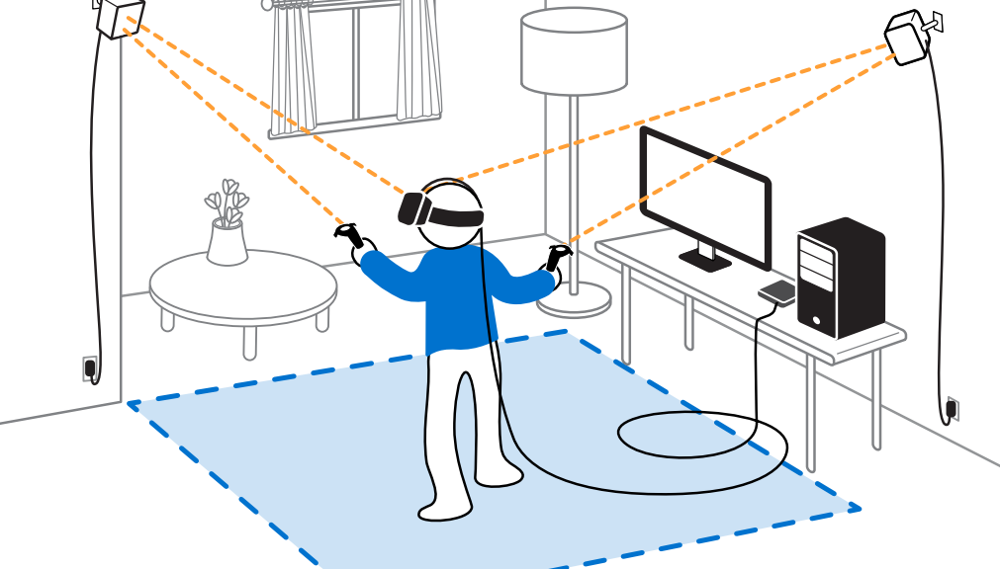

Introduction to virtual reality

About Me
Fosso Arcel
(kraulain)
Software Craftsman
Afgrey, Groovy Community, Aslan
Tech Hobbyist
Virtual reality is the term used to describe a three-dimensional, computer generated environment which can be explored and interacted with by a person. That person becomes part of this virtual world or is immersed within this environment and whilst there, is able to manipulate objects or perform a series of actions.

by Sir Charles Wheatstone (1838)

by Ivan Sutherland at MIT (1968)
acquired by Facebook for $2 billion (2012)


Mobile VR VS Desktop VR

